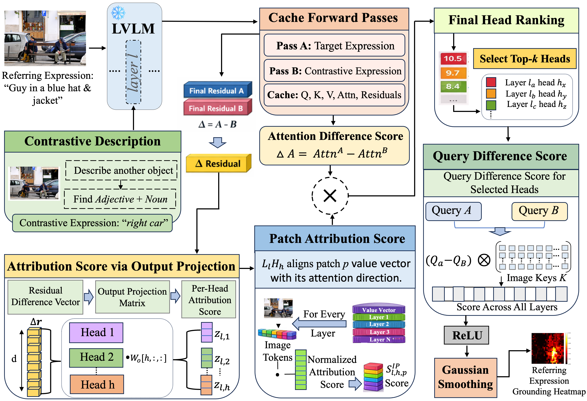

News
Research
My dissertation investigates whether frozen Large Vision-Language Models already encode sufficient spatial grounding knowledge in their attention heads to perform visual understanding tasks — without any labeled data, fine-tuning, or architectural modification. The central finding is that a small subset of contrastive grounding heads can be automatically discovered through dual prompting with semantically opposing descriptions, and their differential attention responses aggregated into precise spatial signals.
Referring Expression Comprehension
Training-free attention-head discovery framework; outperforms training-free baselines by up to 27.95% on RefCOCO.
Under review · TMLRReferring Expression Segmentation
Extended to pixel-level masks via spectral label propagation — competitive with supervised methods, no external segmentation model.
Under review · IEEE SPLVisual Question Answering
Generalizing contrastive head discovery to open-ended visual reasoning tasks.
In progressOngoing Projects
Dual Parking Robot
Developing an intelligent robotic system that autonomously positions itself beneath a vehicle by detecting the front and rear tire centers using dual cameras and deep learning. The system leverages YOLO-based models for partial tire detection and precise center localization, achieving ≤2° alignment error.


Autonomous EV Charging Robot
Working on an autonomous system for electric vehicle charging that integrates AprilTag-based detection for charger localization, YOLO models for detecting CCS1-type charging ports, and SAM for segmenting the port region. The system autonomously aligns and connects the charger using real-time vision and control.
Training-Free Visual Grounding in LVLMs
Discovering that frozen vision-language models encode spatial grounding signals in a small subset of specialized attention heads. Through contrastive prompting and mechanistic analysis, we extract precise localization and segmentation — without any labeled data, fine-tuning, or external models.

Publications
Experience
- Developed training-free visual grounding and segmentation methods via contrastive attention head discovery in frozen LVLMs
- Built vision-based 6DOF pose estimation system for autonomous EV charging robot
- Developed perception pipeline for dual parking robot, achieving ≤2° alignment error
- Mentored 2 M.S. students
- Built microcontroller blockchain network with edge-cloud interplay for secure agricultural data collection (MEITY-funded)
- Developed AI-based assistive device for visually impaired users with real-time scene captioning (DST-funded)
- Developed low-cost IoT-based intelligent stethoscope with embedded AI for early diagnosis (DST-funded)
- Developed neural network models for automated animal intrusion detection in agricultural fields